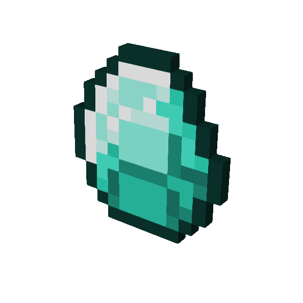

Про гру:
Це дуже відома пісочниця, де можна зробити майже все. Вона є на всіх платформах я наприклад граю з телефона.Чому я її люблю:
- Вона викликає в мене почуття настальгії.
- Вона цікава.
- В ній можна побудувати будь що.
- В її можна грати з друзями.
Мої улюблені моменти:
- Перші добуті алмази 
- Перша побудована домівка